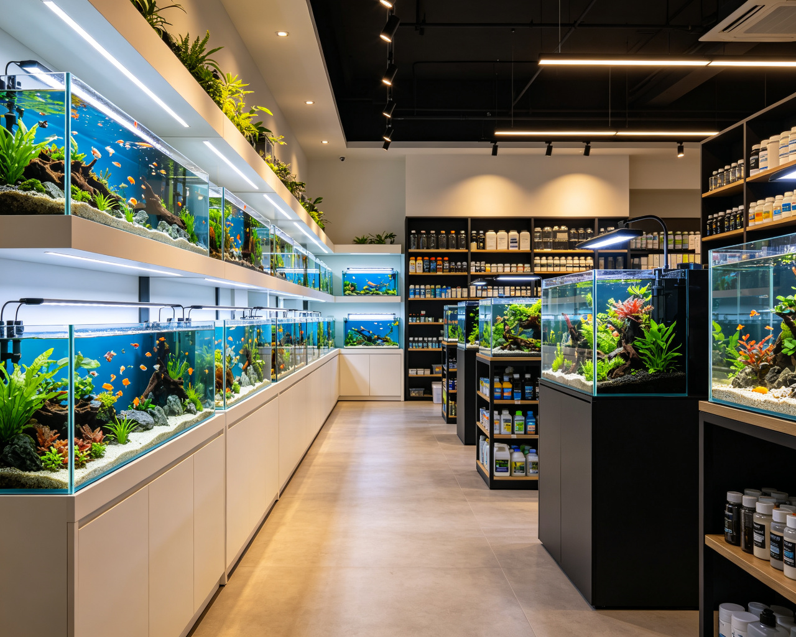

Health First
Every live fish is quarantined for at least 7 days and shipped in insulated, oxygen-rich packaging. Arrival health is guaranteed.
Since 2011, from a single betta in a garage to a one-stop aquarium destination — 15 years of healthier fish, better tanks and honest guidance for every keeper.

In 2011, our founder brought home a half-moon betta in a tiny bowl. Within weeks, he realised that healthy fish need far more than water — they need stable parameters, proper filtration, balanced nutrition and a carefully designed environment.
Struggling to find honest advice and reliable equipment, that frustration became a mission: build the store we wished existed. What began as weekend water changes grew into a dedicated team of aquarists, breeders and aquascapers.
Today, Fish Keeper serves over 120,000 enthusiasts with live cold-chain shipping, professional equipment and one-on-one consulting — but the mission has not changed.
Three principles that guide every fish, every order and every conversation.
Every live fish is quarantined for at least 7 days and shipped in insulated, oxygen-rich packaging. Arrival health is guaranteed.
No upselling, no jargon. Our advisors recommend what your tank actually needs — from cycling to stocking to long-term care.
30-day returns on equipment, a 7-day live arrival claim and lifetime access to our care community.
Founded as a weekend betta breeding corner in a garage.
Opened a 80㎡ storefront with 40 display tanks and a quarantine room.
Brought live fish delivery nationwide with insulated packaging and oxygen bags.
Launched a dedicated aquascaping division and nature aquarium workshops.
Serving enthusiasts across the country with 2,800+ selected products.
"Every fish deserves gentle care, and every tank deserves devoted attention."
— Fish Keeper founding principle, 2011
We believe aquatics is not a hobby of consumption but of stewardship. A tank is a living ecosystem, and our role is to help you keep it balanced, beautiful and thriving for years — not just sell you another fish.
That is why we invest in quarantine, in cold-chain, in honest advice and in after-sales care. It costs more, but it is the only way we know how to do this.
Browse our products or reach out — we are here to help your tank thrive.